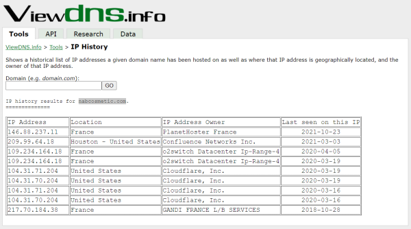

DNS history
• SecurityTrails: https://securitytrails.com/list/keyword
Login → Search domain → Historical Data

• ViewDns.info: https://viewdns.info/iphistory/

Tools:
ATTENTION: give some errors, not updated
wget https://raw.githubusercontent.com/vincentcox/bypass-firewalls-by-DNS-history/master/bypass-firewalls-by-DNS-history.sh
chmod +x bypass-firewalls-by-DNS-history.sh
apt install jq
bash bypass-firewalls-by-DNS-history.sh -d example.com